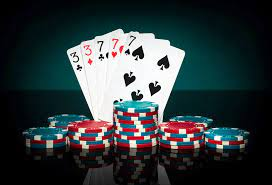

-
 -
-

-


Si las dos cartas iniciales suman 21, se denomina Blackjack, y es la mejor jugada. Cuando un jugador no suma 21 con sus dos cartas podrá pedir cartas para conseguir dicho número o uno cercano pero si el jugador se pasa de esos 21 puntos pierde, indistintamente de lo que haga la banca.
Es porque es rematadamente fácil jugar al blackjack. El objetivo es sencillo: quedarte lo más cerca posible de 21 sin pasarte, y tener una mano más alta que el crupier. Si el crupier se pasa de 21, pierde la partida. Y lo mismo ocurre contigo.
El objetivo principal del blackjack es desafiar a la banca directamente y conseguir un valor igual o lo más cercano al 21. Por el contrario, en el póker, el objetivo está en competir contra el resto de los jugadores consiguiendo la mejor mano posible.
El objetivo de cualquier mano de blackjack es derrotar a la banca. Para esto, debes tener una mano que puntúe más alto que la mano de la banca, pero que no supere los 21 puntos en valor total. O bien, puedes ganar con una puntuación inferior a 22 cuando la mano de la banca supera los 21 puntos.

Aprender los valores de las cartas en blackjack es algo muy sencillo. Lo mejor es que le des prioridad absoluta para conocerlos lo antes posible. Ahí va el valor de las mismas para que los tengas siempre al alcance de tu mano:
No parece nada complicado, ¿verdad? A partir del valor de estas cartas, podemos empezar a profundizar en otros aspectos relevantes. Algunos de los más relevantes son los de cartas fuertes y débiles. Es muy importante que sepas de qué se trata, pero también veremos que lo más importante de todo esto es conocer bien las reglas del blackjack y saber diferenciar el valor de las figuras de la del resto de las cartas.
Cuando diferenciamos entre cartas fuertes y cartas débiles lo que estamos haciendo es señalar la carta del crupier en función del valor de la misma cuando se reparten. Aquí pueden ayudarte en la toma de decisiones las tablas de blackjack de las que te hemos hablado en otros artículos del blog de Casino Barcelona.
Estamos ante cartas débiles en el momento en el que el crupier tiene cartas con puntos que van del 2 al 6. La estadística nos dice que la banca se pasará más de un 35% con valores 2, 3 y 4 y más de un 40% con el 5 y el 6. La ventaja para el usuario es clara, así que es un momento del que se debe intentar sacar el mejor partido.
Cuando una situación de este tipo se dé en tus manos, debes tener en cuenta el valor de las cartas y no pedir otra ya que así evitarás darle ventaja a la banca.
Son lo opuesto a las que acabamos de ver y debes estar atento porque puedes marcar la diferencia en todos los blackjacks switch o el búster blackjack, por citar dos ejemplos.
En blackjack, se conocen como cartas fuertes a aquellas que van del 7 al 10, incluyendo las figuras, y el As. Cuando la banca tiene estas cartas, es una mano fuerte y cuenta con grandes opciones de ganar. Esta ventaja se amplía en el caso de que el jugador no use la estrategia básica de blackjack y no pida carta.
Cuando veas que la banca lleva cartas fuertes, debes llevar una estrategia de juego más conservadora porque te resultará más complicado poder ganarle.
Amplía esta información: Tenemos un artículo en el que brindamos algunos consejos útiles para ganar al juego Blackjack. Puede serte útil para mejorar como jugador.
Ahora que ya conoces los valores de las cartas de blackjack y la diferencia entre cartas fuertes y blandas, vamos a conocer la estrategia básica del blackjack. Con unos sencillos pasos, podrás disfrutar de la mejor manera posible de este juego de naipes. Una vez más, recuerda que esta estrategia de ningún modo puedes contemplarla como un método infalible con el que siempre ganarás porque no es así. Se trata de una ayuda que está bien que conozcas, pero la fuerza del azar sigue estando ahí y ganar continúa siendo muy complicado.
1.- Debes plantarte cuando tengas una mano con grandes posibilidades de ganar, es decir entre 17 y 20. Es mejor opción que pedir otra carta porque podrías pasarte de 21.
2.- Te plantarás en el caso de que tengas una mano dura (entre 12 y 16) cuando el crupier disponga de una mano débil (de 2 a 6). La excepción a esta regla sería cuando pidas carta con 12 si el crupier cuenta con 2 o 3.
3.- Pedirás cartas siempre que no te vayas a pasar de 21 con eso.
4.- Deberás pedir cartas en el caso de que el crupier tenga una mano fuerte del 7 al as. Es cierto que tendrás riesgo de pasarte de 21, pero puede acabar funcionando bien cuando logremos manos buenas.
5.- Puedes decidir doblar tu apuesta cuando la banca tenga una mano débil. Por norma general, es algo que se puede hacer solo con 9, 10 y 11.
Por supuesto que sí. Se trata de las normas más básicas de cuantas tiene el blackjack y desde ahí irás mejorando como usuario. No se trata de algo complicado ya que puedes conocerlo en poco tiempo y disfrutar del juego de la mejor manera.
Los valores de las cartas en el blackjack son estándar y con ellos debes jugar. Aquí van sus cifras:
En blackjack, se conocen como cartas fuertes a aquellas que van del 7 al 10, incluyendo las figuras, y el As. Estamos ante cartas débiles en el momento en el que el crupier tiene cartas con puntos que van del 2 al 6.